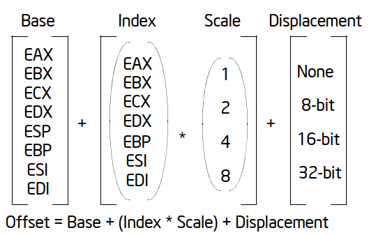

The offset part of a memory address can be specified directly as a static value (called a displacement) or through
an address computation.

- Each of these components can have either a positive or negative (2s complement) value, with the exception of the scaling factor.
- The offset which results from adding these components is called an effective address.